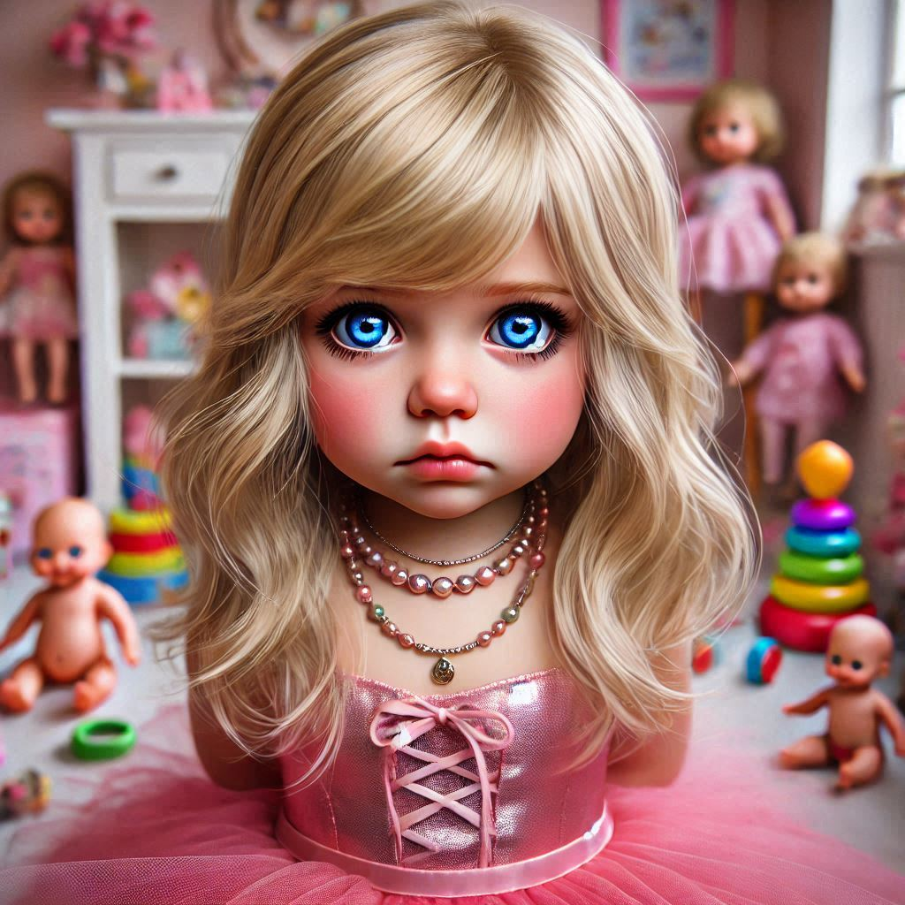
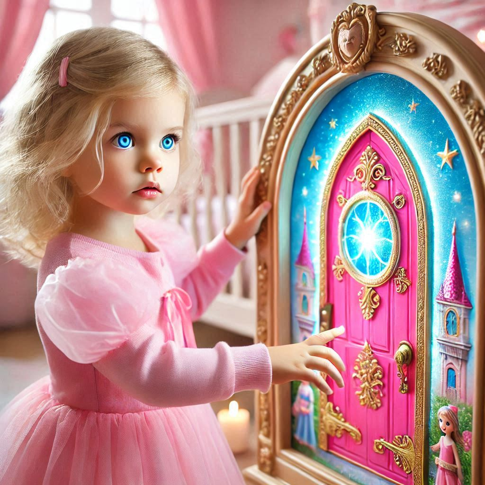
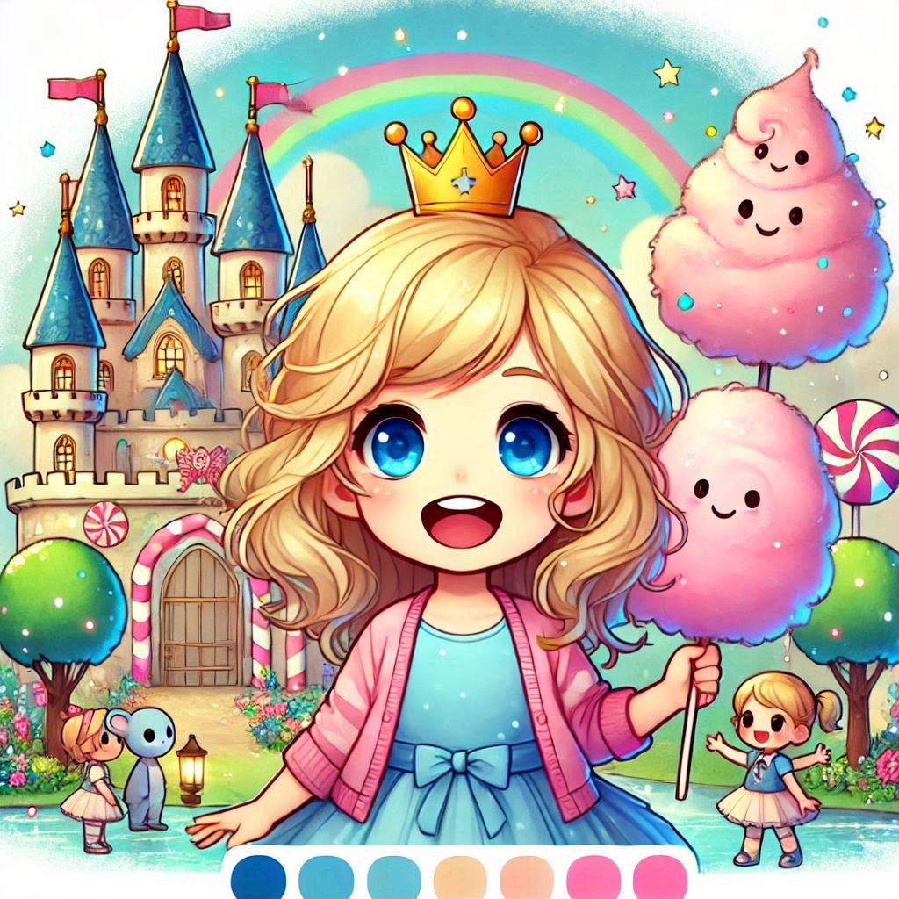
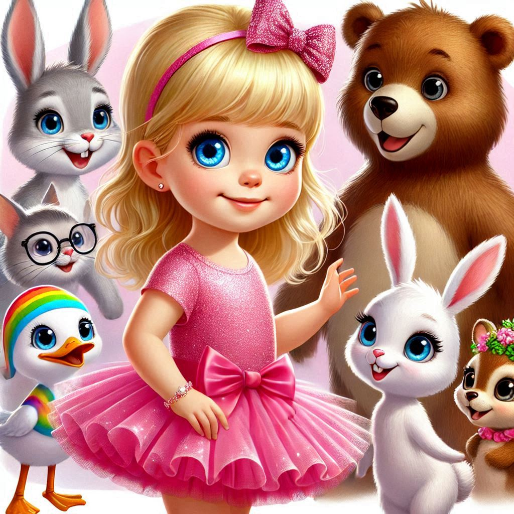
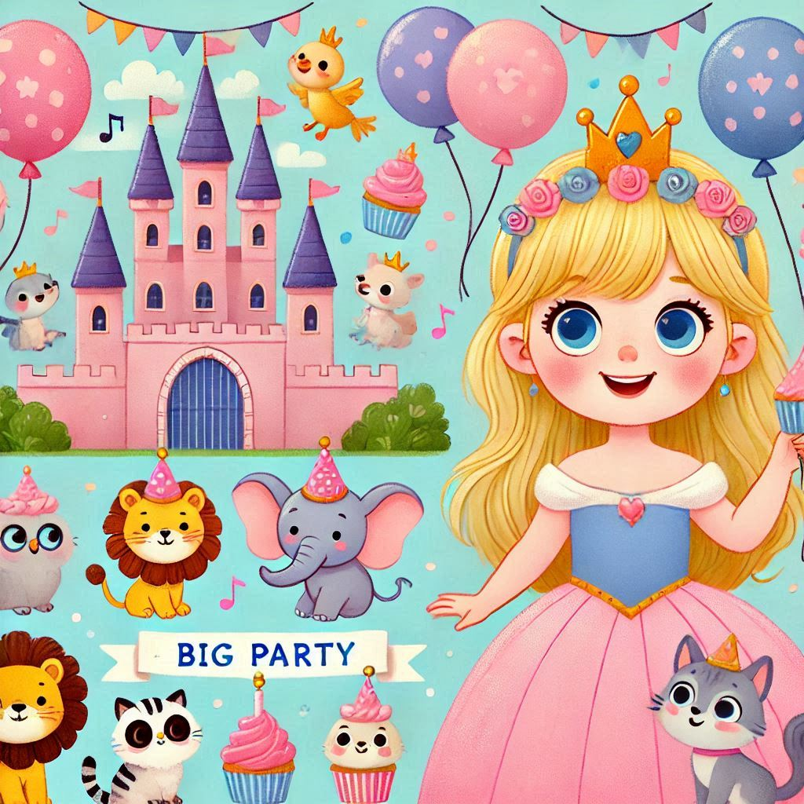
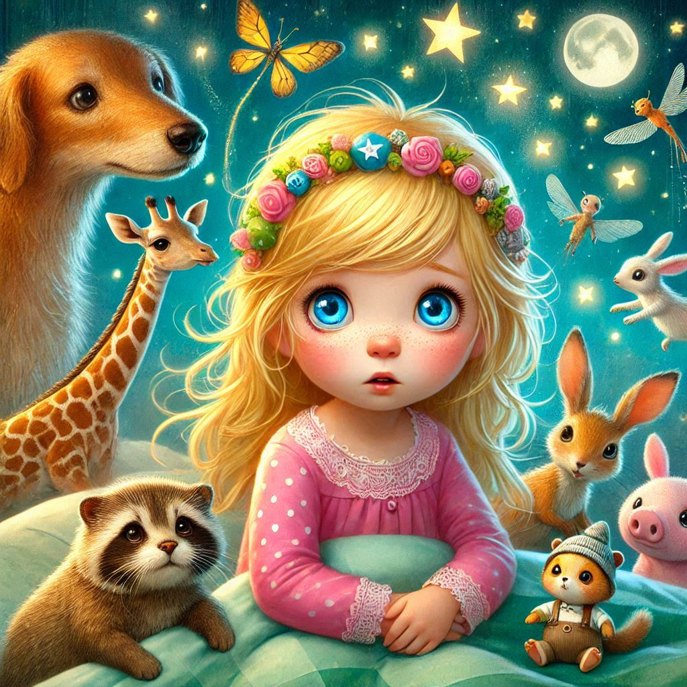
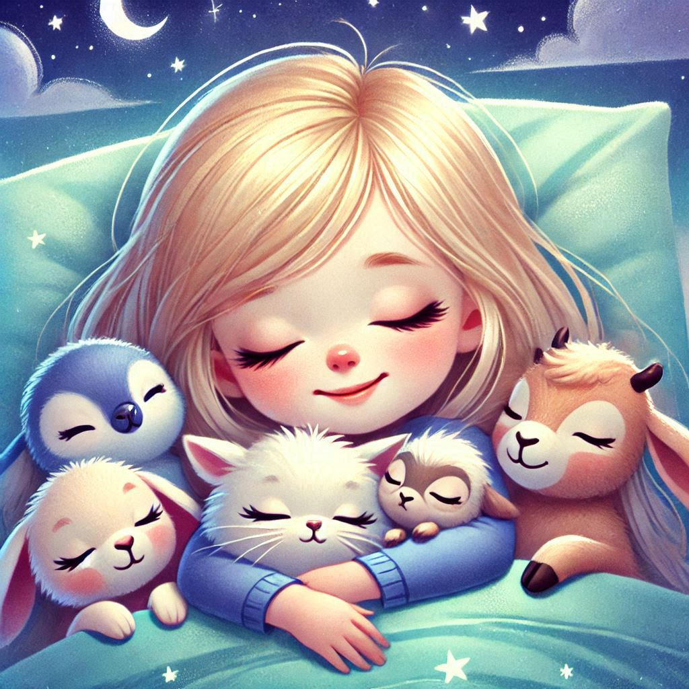

Mia, una nena de gairebé 3 anys, vivia en una habitació plena de joguines meravelloses. Li encantava jugar amb les seves nines,
adornar-se amb collarets i anells, i posar-se els seus vestits de princesa. Sempre tenia un somriure alegre i una espurna de trapelleria
als ulls.
Mia, a nearly 3-year-old girl, lived in a room full of wonderful toys. She loved playing with her baby dolls, adorning herself with
necklaces and rings, and wearing her princess dresses. She always had a cheerful smile and a spark of mischief in her eyes.
Mia, une petite fille de presque 3 ans, vivait dans une chambre pleine de jouets merveilleux. Elle adorait jouer avec ses poupées, se
parer de colliers et d'anneaux, et porter ses robes de princesse. Elle avait toujours un sourire joyeux et une étincelle de malice dans
les yeux.

Un dia, mentre jugava, Mia va descobrir una porta màgica a la seva habitació. La porta brillava amb llums de colors vius i semblava
convidar-la a entrar. Amb curiositat i emoció, Mia va decidir travessar la porta.
One day, while playing, Mia discovered a magical door in her room. The door glowed with vibrant lights and seemed to invite her in. With
curiosity and excitement, Mia decided to step through the door.
Un jour, en jouant, Mia a découvert une porte magique dans sa chambre. La porte brillait de lumières vives et semblait l'inviter à
entrer. Avec curiosité et excitation, Mia a décidé de franchir la porte.

A l'altre costat de la porta, Mia va trobar un lloc increïble: el Regne dels Somnis. Hi havia castells de colors, arbres de cotó de
sucre i criatures amigables per tot arreu. Mia estava emocionada i preparada per explorar aquest nou món.
On the other side of the door, Mia found an incredible place: the Kingdom of Dreams. There were colorful castles, cotton candy trees,
and friendly creatures everywhere. Mia was excited and ready to explore this new world.
De l'autre côté de la porte, Mia a trouvé un endroit incroyable: le Royaume des Rêves. Il y avait des châteaux colorés, des arbres en
barbe à papa et des créatures amicales partout. Mia était excitée et prête à explorer ce nouveau monde.

Mentre caminava pel Regne dels Somnis, Mia va trobar un grup d'animals amigables: un conill, un ós i un unicorn. Tots li van donar la
benvinguda amb somriures i abraçades, feliços de tenir una nova amiga.
While walking through the Kingdom of Dreams, Mia met a group of friendly animals: a rabbit, a bear, and a unicorn. They all welcomed her
with smiles and hugs, happy to have a new friend.
En se promenant dans le Royaume des Rêves, Mia a rencontré un groupe d'animaux amicaux: un lapin, un ours et une licorne. Ils l'ont tous
accueillie avec des sourires et des câlins, heureux d'avoir une nouvelle amie.

Els nous amics de Mia la van convidar a una gran festa al castell. Hi havia globus, pastissets i música per tot arreu. Mia, amb el seu
vestit de princesa, va ballar i riure tota la tarda, envoltada dels seus amics animals.
Mia's new friends invited her to a big party at the castle. There were balloons, cupcakes, and music everywhere. Mia, in her princess
dress, danced and laughed all afternoon, surrounded by her animal friends.
Les nouveaux amis de Mia l'ont invitée à une grande fête au château. Il y avait des ballons, des cupcakes et de la musique partout. Mia,
dans sa robe de princesse, a dansé et ri tout l'après-midi, entourée de ses amis animaux.

Quan la nit va començar a caure al Regne dels Somnis, Mia va sentir una mica de por. No li agradava dormir. Però els seus amics animals
la van acompanyar i li van mostrar que la nit també podia ser màgica, amb estrelles brillants i cuques de llum que il·luminaven el cel.
As night began to fall in the Kingdom of Dreams, Mia felt a little scared. She didn't like to sleep. But her animal friends stayed with
her and showed her that night could also be magical, with bright stars and fireflies lighting up the sky.
Lorsque la nuit a commencé à tomber dans le Royaume des Rêves, Mia a ressenti un peu de peur. Elle n'aimait pas dormir. Mais ses amis
animaux l'ont accompagnée et lui ont montré que la nuit pouvait aussi être magique, avec des étoiles brillantes et des lucioles
illuminant le ciel.

Al final de la seva aventura, Mia es va sentir més tranquil·la. Es va acurrucar amb els seus nous amics animals sota el cel estrellat. A
poc a poc, Mia va tancar els ulls i es va adormir, sentint-se feliç i segura al Regne dels Somnis.
At the end of her adventure, Mia felt calmer. She cuddled up with her new animal friends under the starry sky. Slowly, Mia closed her
eyes and fell asleep, feeling happy and safe in the Kingdom of Dreams.
À la fin de son aventure, Mia se sentit plus calme. Elle se pelotonna avec ses nouveaux amis animaux sous le ciel étoilé. Lentement, Mia
ferma les yeux et s'endormit, se sentant heureuse et en sécurité dans le Royaume des Rêves.